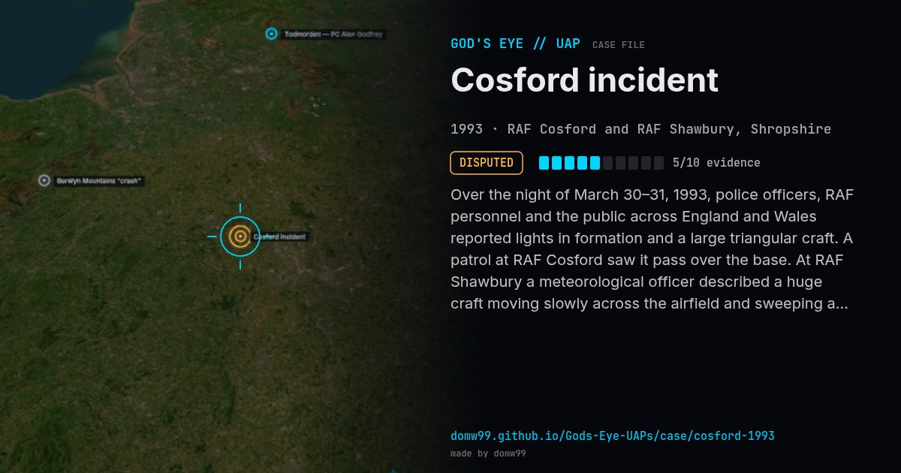

Cosford incident

Over the night of March 30–31, 1993, police officers, RAF personnel and the public across England and Wales reported lights in formation and a large triangular craft. A patrol at RAF Cosford saw it pass over the base. At RAF Shawbury a meteorological officer described a huge craft moving slowly across the airfield and sweeping a light beam over the ground. The MoD's Nick Pope pressed the case internally, and the files were later released to The National Archives.
Explanation
Most of the evening reports matched the re-entry of the rocket body that had launched the Russian satellite Cosmos 2238. The MoD found no threat. Nick Pope, who investigated for the MoD, argued that later reports, including a meteorological officer's at RAF Shawbury, were never explained.
What was seen
Shape: Triangular craft; lights in formation
Witnesses: Police officers, RAF personnel, members of the public
Duration: About 5 hours
Sources
Browse
- United Kingdom
- 1990s
- Disputed
- Military encounters
- Official government documents
- Many independent witnesses
- Military witnesses
- Police witnesses
- Lights and fireballs
- Triangles and V shapes
- Formations and rows of lights